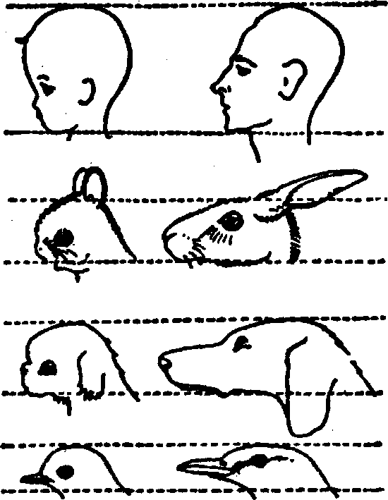

Popüler olmuş birçok filmde deniz kaplumbağalarını ve yavruların yumurtadan çıkışını şaşkınlıkla seyretmişizdir. Dişiler sudan çıkar, kumsalda gelgit hattından emin bir noktaya kadar gider, orada bir çukur açar, yüzlerce yumurta bırakır, çukuru örter ve denize döner. On sekiz gün sonra binlerce küçük kaplumbağa kumun üstüne çıkar ve tabancanın patlamasıyla ileri fırlayan kısa mesafe koşucuları gibi son sürat dalgalara doğru koşarlar; bu sırada martılar da çığlıklar atarak üstlerine çullanır.
Kendiliğindenlik ve henüz gözle görülmeyene doğru koşulmasına, bundan daha canlı bir örnek yoktur. Burada ne öğrenme, deneme-yanılma sorunu söz konusudur, ne de bu küçücük yaratıklar koca dalgalardan korku duyarlar. Acele etmeleri gerektiğini, bunu nasıl yapacaklarını ve nereye gittiklerini çok iyi bilirler. Sonunda, denize ulaştıklarında nasıl yüzeceklerini ve yüzmeleri gerektiğini de hemen bilirler.
Hayvan davranışı üstüne çalışanlar, hayvanın, daha önce hiç bulunmadığı çevreye uyum sağlama yeteneğini barındıran sinir sistemindeki kalıtımsal yapıya “doğuştan gelen uyarıcı mekanizması” (DUM) ve çevreye verilen tepkiyi dürtüleyen etkene de “bulgu uyarımı/ ya da “uyarıcı” adını verirler. Böyle bir işarete tepki veren canlı varlığın birey olduğunu söyleyemeyiz; çünkü bireyin tepki verdiği nesneye ilişkin önceden edinilmiş hiçbir bilgisi yoktur. Tanıyan ve tepki veren özne -bir tür aşkın ya da üst birey denebilir- yerleşen ve çevresini gezen canlı yaratıktır. Burada, bu gizemin metafiziği üstüne spekülasyon yapmayalım; Schopenhauer’in Doğadaki istenç makalesinde bilgece ifade ettiği gibi “çevremizde ve kendimizde olanları bilmeden ve anlamadan, bilmeceler ve bilinmezler denizine batmışız”.
Civcivler, daha yumurta kabukları kuyruklarına yapışıkken, uçan bir doğan gördüler mi kaçacak yer ararlar. Oysa martı, ördek, balıkçıl ya da güvercin gördüler mi aldırmazlar. Üstelik kümesleri üstünden tele bağlı ahşaptan bir doğan maketi uçurulduğunda da canlıymış gibi tepki verirler; ancak geri çekildiğinde rahatlarlar.
Burada, daha önce görülmemiş de olsa, yalnız biçime değil, hareket eden biçime de bağlı kesinlikle belirgin bir imgeyle karşı karşıyayız. Bu imge tasarlanmamış, öğrenilmemiş hatta amaçlanmamış uygun davranış sistemiyle doğrudan bağıntılıdır: uçmak ve saklanmak. Kalıtımsal düşmanın imgesi sinir sisteminde gizlidir, onunla birlikte ortaya çıkan kanıtlanmış tepki de. Üstelik dünyadaki bütün doğanlar yok olsa bile imgeleri yine de civcivlerin içinde bulunacaktır -ama, yapma bir doğan, örneğin tel üzerine konulmuş tahtadan yapılmış bir doğan yeniden görmedikçe bu korku onlarda hiç uyanmayacaktır. Bununla birlikte (en azından birkaç kuşak için) uçuşa karşı gösterilen eski saklanma tepkisi yine de ortaya çıkacaktır ve biz doğanların civcivler için eskiden nasıl tehlikeli olduğunu bilmedikçe bu ani telaşı açıklamakta zorluk çekeceğiz. “Civciv dünyasında karşılığı olmayan bu imgenin şiddetli etkisi nerden geliyor?” diye sorabiliriz, “canlı martı ve ördekler, balıkçıl ve güvercinlerin etkisi yok fakat yapay bir görüntü bazı derinde kalmış duyguları uyarıyor!”
Çocuğun sinir sistemindeki büyücü imgesinin ipucunu burada yakaladığımızı söyleyebilir miyiz? Bazı psikologlar böyle olduğunu söylüyorlar. Örneğin, C. G. Jung, insanda bilinçaltı sisteminin harekete geçirdiği temelden farklı iki tepki tanımlıyor. Birine kişisel bilinçaltı adını veriyor. Bu, kişisel deneyimlerden (bebeklikteki etkiler, şoklar, yıkımlar, tatminler, vb.) çıkan unutulmuş, göz ardı edilmiş ya da bastırılmış anıların bağlamında ortaya çıkıyor. Sigmund Freud’un tanımladığı ve terapiyle çözümlediği alan bu. Ötekine ortak bilinçaltı adını veriyor. Bunun içeriği -bunlara arketip diyor- civcivin sinir sistemindeki doğan imgesi gibi imgelerden oluşuyor. Henüz kimse bize bu imgelerin bilinçaltına nasıl yerleştiğini açıklamadı ama orada duruyorlar!
Jung, “kişisel imgenin arkaik bir niteliği ya da ortaklaşa bir yönü yoktur fakat kişisel yapının bilinçaltı içeriğini ve kişisel olarak koşullanmış bilinç eğilimlerini ifade eder” diye yazıyor.
“Arketip adını verdiğim birincil imge (urtümliches Bild) ise daima ortaklaşadır, yani en azından tarihin belirli dönemindeki bütün insanlarda bulunur. Bütün zamanların ana mitoloji motifleri büyük olasılıkla bu sınıftandır; örneğin, nevrozlu saf zencinin düş ve hayallerinde bir dizi Yunan mitolojisinde bulunan motif saptayabildim.”
Sonra, “birincil imge, anı deposu, hücre protoplazmasındaki devamlı değişme halidir, sayısız benzer deneyimin yoğunlaşmasıyla oluşmuştur... anatomi, fizyoloji tarafından belirlenmiş yapısal eğilimin ruhsal ifadesidir” yargısında bulunuyor.39
Jung’un ‘arketip’ düşüncesi, bugün, uğraştığımız bu konunun alanında öncü kuramlarından biridir. Aslında bu kuram, Adolf Bastian’ın (1826-1905) eski kuramının geliştirilmiş biçimidir. Bastian yoğun seyahatleri sırasında insan türünde saptadığı değişmezliklere ‘birincil fikirler’ (ekmentargedanke) adını vermiştir. Aynı zamanda, çeşitli kültür alanlarında bu fikirlerin farklı biçimde ifade edilip geliştirilmiş olduğunu da kavrayarak, evrensel biçimlerin somut, yerel örneklerine etnik fikirler’ (Völ-kergedanke) adını verir. ‘Birincil fikirler’ hiçbir yerde saf bir biçimde bulunmazlar; değişime uğramış ‘etnik fikirler’ tarafından biçimlendirilen yerel soyutlamaları bulunur. Fakat, insanın kendi imgesi gibi, fazlasıyla ilginç, çoğunlukla ürkütücü yine de sonuç olarak daima insan yaşamının genel görüntüsünün biçimleri olduğu anlaşılabilen bir zenginlik içinde bilinebilirler.
Bastian’ın gözleminde vurgulanması gereken üstü kapalı iki yan vardır. İlkine psikolojik, ikincisine etnolojik yan diyebiliriz. Bunların geniş anlamda bilim adamlarının, araştırıcıların ve filozofların konularına yaklaşımlarındaki iki zıt görüşü temsil ettiği de söylenebilir.
Bastian “fikir öncelikle olduğu gibi incelenmelidir... İkinci etken olarak iklim ve coğrafya koşullarının etkisi araştırılmalıdır” diye yazmıştır.40 Ona göre, ancak bundan sonra üçüncü bir etken olarak tarih boyunca çeşitli etnik geleneklerin birbirlerine etkilerini doğru dürüst araştırmak mümkün olabilir. Yani, Bastian, kültürün psikolojik, kendiliğindenci yönüne öncelik vermiştir. Günümüze kadar biyologların, hekimlerin ve psikologların olağan bulduğu yol da bu olmuştur. Kısaca söylemek gerekirse, ruhun yapı ve işlevinde belirli bir dereceye kadar kendiliğindenlik ve sonuç olarak insan türlerinin tarih ve coğrafyası içinde aynılık söz konusudur; gövdenin yapısında kalıtımsal bir psikolojik yasalar düzeni vardır. Aurignacian mağaraları döneminden beri kökten bir değişim yaşanmamıştır ve bunlar Brezilya cangıllarında, Paris kafelerinde, Baffin iglularında ve Fas haremlerinde kolaylıkla ayırt edilebilir.
Ama, öte yandan, eğer iklim, coğrafya ve yoğun toplumsal güçler, fikirlerin, ülkülerin, hayallerin ve duyguların biçimlenişinde, ruhun doğuştan gelen yapı ve yeteneklerine göre daha önemli kabul edilirse, koşut olarak tersi bir felsefi tutuma varılacaktır. Bu durumda psikoloji etnolojinin işlevi olur, ya da bu görüşü temsil eden bir yazardan, A. R. Radcliffe-Brown’ın Andaman Adalılar yapıtından alıntılarsak:
“Bir toplum, bireyin davranışıyla toplumun gereksinimi arasında uyum sağlayan, o toplumun bireylerinin zihninde varolan duyusal sisteme dayanarak var olur. Toplumsal sistemin her yönü ve toplumun refah ya da uyumunu etkileyen her olay ve her nesne, bu duygu sisteminin bir nesnesi olur. İnsan toplumunda söz konusu olan bu duyular doğuştan gelmez, yalnızca toplumun birey üstündeki etkisiyle oluşmuştur [italikler benim]. Bir toplumun tören adetleri söz konusu duyuların uygun olaylarla ortaklaşa ifadesini bulduğu araçlardır. Bir duyunun törensel (yani ortaklaşa) ifadesi, hem bireyin zihninde gerekli yoğunluk derecesinin oluşmasını hem de bunu kuşaktan kuşağa aktarılmasını sağlar. Böyle ifadeler olmadan bu duyular var olamaz.”41 Bu görüşte, farklı toplumların tören ve mitolojilerinin insan türünün paylaştığı, psikolojiden temellenen, ‘birincil fikirler’ olmadığı, fakat yerel koşullara bağlı görüldüğü hemen anlaşılacaktır ve iki yaklaşım arasındaki temelden farklılık elbette ortadadır.
Küçük kızın zihninde canlandırdığı büyücü fikrine tepkisi, civcivin yapay doğan imgesine gösterdiği tepkiyle karşılaştırılabilir mi? Yoksa, Grimm Kardeşlerin derlediği peri masallarıyla büyüdüğü için, belirli hayali tehlikeleri Alman masal kahramanlarıyla özdeşleştirmeyi öğrendiğini ve korkusuna bunun neden olduğunu söylemek daha mı doğru?
Yanıtı biliyoruz diye kendimizi tatmin etmeden önce, insanın kanıtlanmış bir gerçek olan sinir sisteminin, yiyecek peşinde koşan ve tehlikeli hayvan dünyasına yem olmaktan kendisini ve ailesini koruyan göçebe avcının yöneticisi, kılavuzu ve denetleyicisi oluşunu ciddiye almalıyız. Gelişiminin ilk 600.000 yılında durumu böyleyken ancak 8000 yıldır görece güven içinde, makul bir çiftçi, tüccar, profesör olmuştur (bilinen zamanın ancak yüzde 1.5’u kadar bir süre). Adımız Homo sapiens değil Pithekantropos ve Plesiantropos ya da belki -binlerce yıl önce-Dryopitekus iken uyarıcı mekanizmalarımıza hangi bulgu uyarımlarının etkide bulunduğunu kim söyleyebilir? Ve anatomimiz hakkında, ‘hayvan’ olduğumuz günlerden kalma sayısız kalıntımızın olduğunu bilince (örneğin bir zamanlar kuyruğumuzu sallayan kuyruk sokumu kasları) merkezi sinir sistemimizde benzer kalıntıların olması gerektiğinden kim kuşkulanabilir? Doğada artık uyarıcılar olmadığında imgeler uyur -fakat sanatta ortaya çıkabilirler mi?-
İçgüdü İncelemeleri derslerine girişte, N. Tinbergen’in pek yerinde öğütlediği gibi genelleştirmeler çok dar temel eğilimlere dayanıp gereksiz çelişkilere yol açtığı için, bir sonuç çıkarsamadan önce türlerin davranış biçimleri hakkında tam araştırma yapılmış olmasının üstünde önemle durmak gerekir.42 Ne de olsa bizimki kadar karmaşık olmayan hayvan türlerinin doğuştan ve koşullu davranışları arasındaki ilişki sorunu bile daha çözülememiştir. Hayvan dünyasında öteki türler için de geçerli olabilecek genel yasalar ortaya konabilmiş değildir.
Başka tür bir kuşun yuvasında yumurtadan çıkan ve kendi türü hakkında deneyime sahip olmayan guguk kuşu yavrusu uçmaya başladığında, kendisi gibi başka kuşların yuvalarında büyüyen ve kendi türünün tanımı konusunda eğitilmemiş olan öteki guguk kuşlarıyla birlikte sürü oluşturmaktadır. Fakat öte yandan, bir ördek yavrusu, yumurtadan çıktığında ilk gördüğü yaratığı, örnek olarak bir tavuğu, annesi bellemektedir.
Guguk kuşunun durumu, doğana tepki veren civcivin veya denize koşan kaplumbağaların durumu gibi, kalıtımsal imge psikolojisi sorununu özetlerken üstünde duracağımız ilk noktadır. Kısaca, artık kanıtlanmış bir gerçektir ki, hayvanların merkezi sisteminde nasılsa türlerinin olağan çevresine tekabül eden doğuştan gelen yapılar vardır. Geştalt okulundan psikolog Wolfgang Köhler merkezi sinir sistemindeki bu yapılara ‘eşbiçimler’ adını vermiştir. Doğuştan gelen nitelikleriyle yönlendirilen hayvan doğal çevresiyle uzun, yavaş yavaş deneyim kazandığı, deneyip yanılarak bilgilendiği bir süreç sonucu uyum içine girmez, hemen ve kesin bir tavırla ilişki kurar. Ördek yavrusu örneği, öte yandan, kendi mitolojik arketiplerimiz konusunu araştırırken bu çalışmaların geçerliliğini dikkate almak istiyorsak üstünde durmamız gereken ikinci bir yönü ortaya koymaktadır. Yani, birçok olayda hayvan tepkilerini ortaya çıkaran bulgu uyarımları sabitken ve anahtarın kilide uyması gibi (gerçekten bu yapılara ‘anahtar-güvenliği’ denilmiştir) yaratığın içsel hazırlığına tekabül ederken, bireysel deneyimle oluşturulan tepki sistemleri de vardır. Bu durumda DUM yapıları ‘açık’ diye tanımlanır. ‘Etki’ ya da ‘baskıya’ karşı hassastırlar. Dahası, ördek yavrusu örneğinde olduğu gibi, bu ‘açık yapılar’ varsa, ilk etki belirleyici olur, tamamlanması için bazan bir an yetebilir. Ve tersi de doğrudur.
Hayvanlarda öğrenme konusuna özellikle önem veren Profesör Tinbergen’e göre farklı öğrenme yetenekleri yalnız farklı türler için söz konusu değildi; bu tür doğuştan gelen yetenekler, ancak hayvanın büyümesi sırasında bazı önemli devrelerde olgunlaşır. Örneğin, Grönland’ın Eskimo köpekleri için şunları yazar:
“[Köpekler] beş, onunun bir araya gelip oluşturdukları sürüler halinde yaşarlar. Sürünün üyeleri ortak toprakları bütün öteki köpeklere karşı savunur. Bir Eskimo yerleşim yerine ait bütün köpekler, öteki sürülerin toprakları ve topografyası hakkında bütün bilgilere sahiptirler. Saldırının nereden gelebileceğini bilirler. Gelişmemiş köpeklerse topraklarını savunamazlar. Üstelik bütün bölgeyi dolaşıp başkalarının topraklarına girerler ve çoğunlukla şiddetle kovalanırlar. Ciddi biçimde yaralandıkları bu saldırıların sıklığına karşın toprakların yapısını öğrenmezler ve gözlemci için bu aptallıkları şaşırtıcıdır. Oysa genç köpekler yetişkinleştikçe öteki toprakları öğrenirler ve bir hafta içinde sınır aşma maceraları son bulur. İki erkek köpeğin ilk çiftleşme, ilk toprak savunusu ve yabancı topraktan ilk kovalanmayı yaşamaları bir hafta içinde gerçekleşmişti”.43
Sigmund Freud ve okulunun, insan yavrusunun olgunlaşma aşamaları ve bu aşamalardaki etkilere karşı bireyin yaşam boyu oluşturduğu yanıtları araştırmasından sonra, insanın öğrenim dünyası içinde ‘içsel hazırlık’ ve ‘etki’ kavramlarının geçerliliğini tartışmak artık zorunluluk olmaktan çıkmıştır. Bebeğin öğrenme zorunda olduklarının çoğu grup bağlantılarının çeşitli yönleriyle ilişkili olduğundan, Eskimo köpeklerinin toplumsal yapısıyla yakın benzerlik gösterir. Fakat insan dünyasındaki içgüdü ve doğuştan gelen yapıların araştırılmasını zorlaştıran bir etken vardır; doğuşta çok çaresiz olan hayvanlar bile çabuk olgunlaşırlar, insan yavrusu ise doğumdan sonra daha bir düzine yıl daha çaresiz durumdadır ve karakterinin olgunlaşması döneminde yerel toplumun baskı ve etkilerine tamamiyle açıktır. Baselli Adolf Portmann’ın çok iyi ve sık sık belirttiği gibi, insanı hayvan dünyasının üstüne çıkaran üç nitelik, dik durma, konuşma ve düşünme doğumdan sonra gelişir; sonuç olarak, her bireyin yapısında doğuştan gelen biyolojik niteliklerle etkiyle gelişen geleneksel etkenlerin ayrılmaz bir bileşimi bulunur. Birini ötekinden ayrı düşünemeyiz.
Öyleyse, bilim adına, bunu yapmaya çalışmayalım!
İnsanın doğuştan gelen ‘anahtar-güvenliği’ karşılıklarından bazılarını tanımlama olanağı gene de bulunabilir. Örneğin bebeğin memeye karşı tavrı. İnsanda bazı ilkel hayvanlar gibi merkezi uyarıcı mekanizmalar’ (MUM) olduğu kesindir. Bunlar içerden ve dışardan uyarı alır ve bireyi ‘tatmin edici hareket’e doğru, bazan daha iyi uslamlama yapmasına fırsat tanımadan, yönlendirirler. Bunun en iyi örneği belli hormonların (yani testosteron propionate ve estrojen) uyarımıyla cinsel hareketin doğmasıdır. Bütün türlerin en masum bireylerinde bile bu uyarımlara karşı tepki verildiği iyi bilinmektedir. Bu görüngüler bakış açımızın doğrulanması için laboratuvar deneyi gerektirmeyecek kadar açıktır. Fakat insanın içgüdü yapısının tamamının, hayvanlardan çok daha fazla öğrenme ve koşullanmaya açık olduğu unutulmamalıdır. İnsan davranışını değerlendirirken, böcek, balık, kuş hatta maymungillerin merkezi uyarıcı mekanizmalarıyla (MUM), doğuştan gelen uyarıcı mekanizmalarının (DUM) değerlendirilmesine göre çok daha fazla kişisel deneyim etkeni üstünde durmamız gerekir.
Bu önemli gerçek, Bastian’ın birincil ve etnik fikirler arasında gördüğü zıtlıktan ortaya çıkan sorunun ana hatlarını belirlemede yardımcı olabilir. Biyolojik homo sapiens türlerinin, şimdi doğuştan gelen nörolojik yapıları diye adlandırdığımız birincil ya da doğuştan gelen fikirlerini, XIX. yüzyılın anlatımıyla, bütün insan deneyim ve tepkilerinin ana temellerini oluşturan merkezi sinir sistemindeki kalıtımsal yapılar olarak yorumlayabiliriz. Öte yandan, etnik fikirler, insan etkinliklerinin, her toplumda bulgu uyarımlarıyla ortaya çıkarıldığı tarihsel koşullanmayı belirtir. Fakat, toplumsal koşullanmadan soyutlanmış ‘insan’ diye insan olmadığından, insan etnolojisi düzeyinde etkiden kaynaklanmayan bulgu uyarımı örnekleri çok azdır; türlerimiz üstüne çalışanların bazan insan ırkının kalıtımsal yapısal sistemi yokmuş gibi yazabilmesine olanak sağlayan da bu durumdur. Fakat artık insan zihninin hiçbir anlamda XVII. yüzyıl epistomolojisinin tabula rasası44 olmadığı kanıtlanmıştır. Gerçekten de durum bunun tam tersidir! İnsan, her biri kendi yapıtını yaratan önceden belirlenmiş birçok yapının toplamıdır. Kişisel deneyime, benzerlik gösteren hayvanlara göre daha açık olmaları bizi bunların var olduğu gerçeğinden uzaklaştırmamalıdır. İnsan kültüründeki temel niteliklerin tüm dünyada değişken biçimlerinden çok benzerlik gösteren gücü gözden kaçırılmamalıdır. Fakat aynı biçimde, öte yandan, verili bir bulgu uyarımının belirgin evrensel dağılımından dolayı bunun doğuştan geldiği ve etkiden kaynaklanmadığı kanısına varmakta da aceleci olmamalıyız.
Şimdi, artık, hayvansı özellikleri bakımından insanın en azından bir yıl erken doğduğu ve diğer türler ana rahminde gelişirken insanın gelişimini toplum içinde tamamladığı düşüncesi, biyolojinin ortak bir görüşü olmuştur. Kılsız oluşumuzun ceninle ilgili bir özellik olduğu, birçok fizyolojik sıkıntımızın erken doğumdan kaynaklanan prematürlüğün bir sonucu olduğu gözlenmiştir. Nietzsche’nin pitoresk terimini kullanırsak yaşam boyu ve son günümüze kadar das kranke Tier ‘hasta hayvan’ olarak kalmamız olağandır. İlk kez ‘insan bozulmuş bir maymundan başka bir şey değildir’ diyen sanırım büyük Fransız doğabilimci Buffon’du (1707-1788). 1926’da İnsanın Yeniden Doğuşu Sorunu kitabında, olgunlaşmayı engelleyen mutasyonların hayvanlarda gerçekleşmesini göstermesi ve insan evriminin bu tür değişimlerden etkilenmiş olması gerektiğini ileri sürmesiyle bu görüşe bilimsel bir temel kazandıran Hollandalı anatomici Ludwig Bolk oldu. Bolk’a göre insan şempanze embriyonunun gelişiminin son aşamasında bir yerde takılmıştır.45
Daha ılımlı bir görüş, türümüzün kılsızlığını, derimizin bir duyu organı ve bedenimizin parçalarının görme duyumuzun ilgi odağı olmasına bağlıyor. İnsan omurgasından geçen duyu sinirleri bütün kürklü ailelere göre çok daha fazladır. Yalnız çıplaklığımız değil, örtünme ve açılmaya ilişkin çeşitli davranış kiplerimizi de etkileyen bulgu uyarımlarının çeşitliliği ve gelişkinliği, hayvanların zevk ve cinsel birleşme yollarına göre çok daha uyarıcıdır. Kılsız yüz zarif bir hareket organı haline gelmiştir; hayvan dünyasının toplumsal ‘uyarıcı’larına göre (kuşların ötüşleri, gösterişli boynuzlar ve oynayan kuyruklar) sonsuz derecede incelikli ve toplumsal işaretler içeren birçok yönlülük kazanmıştır. Yani mutasyon olumsuz değil olumlu yöndedir. Ve rahmin olanaklarının ötesine varan uzun gebelik, ilerlemenin sonucudur. Schopenhauer’in dediği gibi “bütün büyük şeyler yavaş olgunlaşır”.
Ayrıca, rahmin dışındaki yaşamın ilk yılında, bu mükemmel baş ve beynin nasıl büyük bir hızla geliştiğini unutacak mıyız? Doğumumuzdaki prematürlüğümüzden ötürü öteki omurlular gibi kalıplaşmış, güvenlik kiliti birçok tepkinin bizde olmadığı, ama bunun yerine daha açık bir refleks yapımız olduğu, içgüdülerimizde daha az kalıplaşmış, daha az tutucu, güvenilir olduğu ve hayvanlara göre daha kaygısız olduğumuz su götürmez bir gerçek. Fakat öte yandan, en yakın rakibinden üç kat büyük bir beyin geliştirmişiz ve bize yalnızca yeni bilgiler değil (kaçınılmaz ölümümüzün bilgisi de dahil) denetleme ve hatta bastırma yeteneği de veriyor.
Yine de, yapabileceklerimiz arasında en iyi, en insancıl ve en önemli olanı, kuşkusuz, oynama yeteneği içinde bizi alıkoyan olgunlaşmamıştık armağanının kendisidir. Hayvanlar yavruyken, yaban yaşamın tehlikelerinden anne babalarının gözetimi altında korunurken oynama yeteneğini sergilerler ve hemen hepsi kur yaparken aynı etkileyici oyunu oynarlar. Oysa insanda -belki de erkeklerin hepsinde ve gerçekte de kadınların çoğunda demek daha doğru olur- bu yetenek yaşam boyu sürer. Aslında, şu ya da bu biçimde erkeklikte ve kadınlıkta başarısız olanlar, bizim küçük korkularımız olanlar, benzetmek yerindeyse, yalnızca goril ve Habeş maymunu biçiminde olanlarımızdır. Hayvan psikoloğu Konrad Lorenz oyun yeteneğimizi nelere borçlu olduğumuzu anlattığı çok anlamlı yazısında bize şunları anımsatır:
“İnsanın yaptığı her çalışma gerçek bir meraktan, bir tür oyundan kaynaklanır. İnsanın dünyaya egemen olmasını sağlayan doğal bilimlerin her verisi, tamamıyla eğlence amacıyla yapılan etkinliklerden doğmuştur. Benjamin Franklin uçurtmasının kuyruğunda yıldırımlar çaktığında paratoneri ancak Hertz’in elektrik dalgalarını araştırırken radyo yayınını düşündüğü kadar düşünüyordu. Bir çocuğun oyundaki merakının nasıl kolayca bir doğabilimcinin çalışmasına dönüşebildiğini gözlemlemiş olan biri, oyunla araştırma arasındaki temel benzerlikten kuşku duymayacaktır. Meraklı çocuk görünüşü yetişkin şempanzenin hayvansı doğasında bütünüyle ortadan kalkar. Ama, Nietzsche’nin düşündüğü gibi, bu çocuk insanın içinde bir yerlerde hep saklanır. Tersine onu her zaman yönetir.”46
Hayvanlar konuşamazlar; bunun bir nedeni kuşkusuz seslerle oynayamamalarıdır. Sanatları yoktur; yine nedeni de, formlarla oynayamamalarıdır, İnsanın oyun yeteneği, kendisi için sinir sisteminin uyarıcılarına eşbiçimmiş gibi tepki yaratabilecek kadar yeni imgeler hayal edebilecek, formlar düzenleyebilecek bir güce sahiptir. Kendi yarattığı büyücüye kapılan küçük kızı gördük. Şimdi bir şaire neler olabileceğini gözlemleyelim. İngiliz şair ve eleştirmen A. E. Housman’ın aşağıdaki sözleri, şiirsel pekiştirmede etkili olan belli bir güdüleyici ilke olarak düşündüğüm bu şeyin en doyurucu tanımını şöyle veriyor:
“Şiir benim için zihinsel olmaktan çok fiziksel bir şeydir. Bir iki yıl önce Amerika’dan başkalarından olduğu gibi benden de şiiri tanımlamamı isteyen bir yazı aldım. Şiiri bir teriyer cinsi bir köpeğin fareyi tanımlamasından fazla tanımlayamayacağım biçiminde yanıt verdim; ikimizin de o nesneyi ancak bizde uyandırdıkları belirtilerle bilebildiğimizi yazdım. Bu belirtilerden biri de, bir başka nesneyle ilişkili olarak Temaniteli Eliphaz tarafından anlatılmıştır: ‘Bir ruh yüzümde dolaştı. Tüylerim dik dik oldu’. Deneyim bana, sabahları traş olurken düşüncelerime hakim olmayı öğretti, çünkü aklıma bir mısra gelirse tüylerim dikilir ve jilet yürümez. Bu belirtiye yüzümden aşağı bir titreme eşlik eder. Boğazın sıkışması ve gözlerin sulanması da bir başka belirtidir. Sonuncu bir belirti daha var ki, onu ancak Keats’in son mektuplarından birinden yapacağım alıntıyla tanımlayabilirim; Fanny Brawne’den söz ederken bana onu anımsatan her şey, beni mızrak gibi deliyor’ der. Bu duygunun hissedildiği yer mide bölgesidir.”47
Okuyucuya yalnız şiir imgelerinin değil, aşk ve din, yurtseverliğin de, etkili olduklarında, gözyaşı, iç çekme, içeriden ağrılar, kendiliğinden gelen iniltiler, çığlıklar, kahkaha patlamaları, şiddet ve düşüncesiz davranışlar gibi bir takım fiziksel yanıtlarla hissedildiğini sanırım anımsatmaya gerek yok. Aslında, söylemek gerekirse, insan deneyimi ve sanatı, insan için doğanın işaretlerinin hayvanların içgüdülerinde yarattığı fiziksel tepkilerden daha az etkin olmayan ve onları davranışa dönüştürmesinden geri kalmayan bir işaret uyarısı çevresi yaratmayı başarmıştır. Bu işaret uyarıların biyolojisinin, psikolojisinin, sosyolojisinin ve tarihinin, konumuz olan karşılaştırmalı mitolojinin alanını oluşturduğunu söyleyebiliriz. Şimdiye dek hiç kimsenin, doğuştan gelenle sonradan kazanılan, ya da doğal olanla kültürel koşullanmaya bağlı olan, ya da insan kültürünü başlatan şeylerin ve bu şeylerin yarattığı tepkilerin temel’ olanıyla ‘etnik’ olanının özellikleri arasındaki ayrımı belirleyebilecek etkin bir yöntem geliştiremedi; ancak, şair Housman’ın sinir sistemimiz üzerinde enerji boşaltıcıları gibi çalışan imgeler ve düşünce akışını sağlayanlar arasında yaptığı köktenci ayrım, sözü edilen özellikleri sınamak için mükemmel bir ölçüt sunmaktadır.
Housman “şiirsel idealar vardır diye kendimi kandıramam” diyor. “Hiçbir doğru bana kesinmiş gibi gelmiyor, ne de herhangi bir gözlem çok sağlam ve ne de sözcüklerle dile getirilmiş bir duygu çok yüce görünüyor bana. Bazı ideaların şiirsel dile çok uygun olduklarını bazılarınınsa uygun olmadıklarını en fazla söyleyebilirim; bu idealar, şiirden onları yücelten ve değiştiren bir zenginlik kazanırlar ve bu zenginlik, çözümlenerek, ayrı bir şeymiş gibi görülemez.”48
Housman “şiir, söylenen şey değil o şeyi söyleme biçimidir” diye yazarken ve “zihin şiirin kaynağı değildir, hatta onun üretimine engel olabilir ve üretildiğinde onu tanıma konusunda bile zihne güvenilemez” derken49 aslında yaptığı bütün yaratıcı sanatların, şiir, müzik, dans, mimarlık, resim ya da heykel olsun, ilk belitini tekrar dile getirmek ve açıklığa kavuşturmaktan başka bir şey değil. Bu da, sanat, bilim gibi, bir ilişkiler mantığı değil, tersine ilişkiden kurtuluşun ve anlık deneyimin yorumudur: Formların, imgelerin ve ideaların birbirlerine seslenecek biçimde sunulmasıdır; aslında bir düşünce ya da bir duygu da değildir, yalnızca bir etkidir.
Bu belit üstünde durmakta yarar var, çünkü tarihsel açıdan bakıldığında, mitoloji bütün sanatların anası; ama birçok mitolojik anne gibi, kızı aynı zamanda kendi annesi oluyor. Mitoloji, mantıkla yaratılmadı; mantıkla da anlaşılamaz. Tanrıbilimci yorumlar onu saçma bulur. Edebiyat eleştirmenleri onu eğretilemeye indirgerler. Ama önümüzde yeni ve umut verici bir yaklaşım beliriyor artık mitoloji, biyolojik psikoloji adı verilen bu yaklaşımın ışığı altında insanın sinir sisteminin bir işlevi olarak görülürse, beynimizin de onun en hayranlık uyandıran bir meyvesi olduğu doğanın enerjisini boşaltmayı ve yönlendirmeyi sağlayan doğuştan gelen ve sonradan öğrenilen bulgu uyarımlarına eş değer olur.
Hayvanlardan çıkartılacak bir ders daha var. Hayvan davranışı üstüne çalışanların ‘normalüstü bulgu uyarımı’ olarak adlandırdıkları bir konu var. Bildiğim kadarıyla bu konu, sanat, şiir ya da mitosla hiç ilişkilendirilmemiş. Aslında bu ilişki, uyarımların gücünü anlamakta ve insanın düş dünyasının canlandırılmasındaki işlevlerini kavramakta bize en güvenli yol gösterici olabilir.
Tinbergen “doğuştan gelen uyarıcı mekanizmalar bana şöyle ya da böyle hep tepkinin yöneldiği nesne ya da durumun özellikleri olarak geliyor” der. “Fakat DUM’nın yakından araştırılması bazan doğal durumdan daha etkin uyarımlar oluşturan durumların olasılığını ortaya çıkarıyor. Yani doğal durum her zaman optimal değil.”50
Örneğin, kurşuni kelebek (Eumenis setnele) olarak bilinen bir tür kelebeğin erkeği, çiftleşmede seçimi yapandır ve uçan dişiler içinden hep açık renkliler yerine daha koyu renklileri yeğler. Öyle ki, doğada bildiğinden daha koyu bir model karşısına çıkarıldığında cinsel bakımdan tahrik olan erkek, türünün en koyu dişisine onu yeğlemektedir.
“Burada,” diyor Profesör Portmann, doğada tatmin edilemeyen bir “eğilim” buluyoruz, “belki birgün kalıtımsal olarak daha koyu mutasyonlar ortaya çıkarsa, bunlar eşlerin seçiminde rol oynayabileceklerdir. Belirli bulgu uyarımlarının yeni türlerin desteklenmesinin ve oluşmasının habercisi olup olmadığını kim bilebilir; belki evrimin yönünü belirleyen eş seçimi sürecinin temelindeki etkenlerden biri de budur?”51
İnsan dişisi, oyun yeteneğiyle, normalüstü bulgu uyarımının gücünü kuşkusuz binlerce yıl önce tanımıştır: Göz çizgilerini kaldıran kozmetikler, neolitik çağın en eski kalıntıları arasında bulunmuştur. Ve bundan sonra, ritüelleşme, hiyeratik sanat, maskeler, gladyatörce giysiler, kralca elbiseler ve doğanın bütün öteki insanca kavranmış ve gerçekleştirilmiş kullanımlarının gücünü değerlendirmek için yalnızca bir adım ya da bir dizi doğal adım daha kalmıştır.
Tanrıların doğal tarihi araştırılırken, Tanrıların kendilerinin bulgu uyarımları olduğu yolunda kanıtlar bulacağız. Doğaüstü esinleriyle insanları Tanrılara dönüştüren katalizatörler olarak işlev gören ritüel biçimlerinin ve uygarlığın -insanın kendi içinden çıkan ve doğanın sınırlarını ay kadar uzaklara iten yeni çevrenin- ritüelin ve sonuç olarak da Tanrıların damıtıcısı olduğunu, yani doğanın hiçbir zaman karşılamadığı ama yine de doğanın, insanın onun çocuğu olduğu kadar özelliği olarak, DUM dizisini etkileyen normalüstü bulgu uyarımları örgütü olduğunu gösteren kanıtlar çıkacak.
Şu an için, bazı kültürel bulgu uyarımlarının ortaya çıkışının tarihinin geç olması nedeniyle, insanın onlara verdiği karşılığın öğrenilmiş tepki olduğuna karar vermenin doğru olmayabileceğini söylemek yeterli. Tepki, daha önce görülmemişse de, kendiliğinden olabilir. Çünkü yaratıcı imgelem insan organizmasında doğada karşılığı tam bulunmayan doğuştan ‘eğilim’lerden birini ortaya çıkarmış olabilir. Dolayısıyla, yalnızca ritüel sanatlar ve onlardan gelişen arkaik uygarlıklar değil, insanın daha zengin olan en büyük düşlerinin ötesine uçuşunda kullandığı modern oklarla parçalanmış sonraki sanatlar da, varlığımızın en derin sırlarını -korkularımızı, sevinçlerimizi ve şaşkınlıklarımızı- açığa vuran normalüstü bulgu uyarımlarının bir tarihi olarak, belki de en iyi biçimde psikolojik açıdan yorumlanabilir. Gerçekten de konumuzun derin gizleri, yalnız insanın değil, tüm canlı dünyanın gizleri, daha tam keşfedilmiş değildir.
Öyleyse toparlarsak: hayvan davranış araştırmaları alanında -içgüdünün gözlemlenmesinde güvenilir sonuçlara varılabilen sınanabilir deneylerin yapıldığı tek alandır- iki tür doğuştan gelen uyarıcı mekanizma tanımlanmıştır; biri klişeleşmiş olan, öteki etkiye açık olan. Birincisinde sinir sisteminin içsel hazırlığı ile yanıt oluşturan dışsal bulgu uyarımı arasında kesin bir anahtar-kilit ilişkisi vardır. Öyle ki eğer insanda kalıtımsal olarak bu nitelikte birçok -ya da herhangi- DUM varsa ruhta kalıtımsal imgeler olduğunu söylemek doğru olur. Henüz kimsenin bu anahtar-kilit ilişkisinin nasıl oluştuğunu açıklayamaması onların varlığının gözlemlenmesini değersiz kılmıyor:
Kimse bir doğanın bizim kümesteki tavuğun sinir sisteminde nasıl yer ettiğini bilmiyor, yine de çeşitli deneyler de facto varlığını göstermiştir. Fakat insan ruhu henüz bu tür klişeler açısından tatmin edici derecede incelenmiş değildir ve korkarım, araştırmaların gelişmesini beklerken, kalıtımsal imge ilkesinin evrensel mitolojileri yorumlarken ne dereceye kadar kullanılabileceğini bilmediğimizi itiraf etmek zorundayız. Onun var olabileceğini reddetmek de, tasarlanmış bir düşünce olduğunu ileri sürmek kadar ilkel bir tutumdur.
İnsan ırkları arasındaki kimi zaman açık kimi zaman çarpıcı farklılıkların, doğuştan gelen uyarıcı mekanizmaların belirgin farklılıklarını yansıtıp yansıtmadığını söyleyebilecek durumda da değiliz. Hayvanlar arasında bu tür farklar var -gerçekten temel içgüdü DUM’ları arasındaki değişiklikler mutasyondan etkilenen niteliklerin başında geliyor.
Buna bir örnek olarak Tinbergen’in gözlemi şöyle: “Kuzeybatı Avrupa’daki büyük martı (Larus argentatus) ve karabaşlı martı (L. fuscus) aynı türün çok farklılaşmış coğrafi ırkları olarak kabul ediliyor. Coğrafi yalıtılmışlıktan sonra, alanlarının genişlemesiyle tekrar ilişki kurmuşlar. Davranışları arasında birçok farklılıklar var. L. fuscus kesinlikle göçmen bir kuş, sonbaharda Avrupa’nın güneybatısına göçüyor. L. argentatus ise daha sabit bir yere sahip. L. fuscus, L. argentatusdan çok daha fazla açık deniz kuşu özelliklerine sahip. Yavrulama mevsimleri farklı. Bir davranış farklılığı özellikle ilgi çekici. İkisinin de iki tehlike çağrısı var, biri görece az, öteki büyük tehlikeyi haber veriyor. L. argentatus büyük tehlike alarmını L. fuscusa göre çok daha nadir veriyor. Sonuç olarak, tehlikelerin çoğuna iki cins farklı tepkiler gösteriyorlar. Koloniye bir insan müdahale ettiğinde büyük martılar küçük alarm verirken L. fuscus büyük alarm verecektir. Alarm derecesine ilişkin bu farklılık iki cinsin alarm çağrıları arasında niteliksel bir ayrım olduğu izlenimi veriyor. Bir cinsin birinci alarmı öteki cinsin öteki alarmının yok olmasına yol açabilir. Sonuç olarak motor donanımında niteliksel bir değişim yaratabilir. Kavrayıştaki bu farklılığın yanında, her çağrının derecesinde de fark var.’52
İnsan ırkları arasında da fizyolojik farklılıklar yanında psikolojik olduğu düşünülebilecek farklılıklar görülmüştür. Örneğin, yetişkinliğe erişme süreleri arasındaki farklılıklar gibi. Geza Róheim Psikanaliz ve Antropoloji adlı gayretli çalışmasında bunlar üstünde durur.53 Fakat kayıtlara geçen sınanmış bir kaç gözleme dayanarak, bu konuda hep yapıldığı gibi, zihinsel yetenek ve ahlaki karakter üstüne genellemeler yapmak doğru değildir. Ayrıca, doğuştan yetenek bireyden bireye öyle büyük değişiklikler gösteriyor ki, ırk temelinde genellemeler yapmanın anlamı kalmıyor.
Kısaca, Homo sapiens türlerinin doğuştan gelen klişeleri sorunu halen yanıt bekliyor. Nesnel ve gelecek vadeden çalışmalar yapıldı ama fazla ilerleyebilmiş değiller. E. Kaila54, R. A. Spitz ve K. M. Wolf55 yaptıkları bir dizi ilginç deneyle 3-6 aylık bebeklerin insan yüzü gördüklerinde gülerek tepki verdiklerini saptamışlardır. Normal insan görünüşünü belirleyen ayrıntıları yok eden maskeler takıldığında, yüze verilen tepkiyi alabilmek için yüzün, iki gözü (tek göz ya da asimetri olmamalı), düz bir alın (buruşuk alınlar güldürmüyor) ve burun olması gerektiği görülmüştür. Bebeğin, karşısında gülümseyen bir ağız görmese de gülümsemesi açıklanması güç bir olay; bu da gülümsemenin bir taklit olmadığını gösteriyordu. Ama, yüz hareketli olmalı ve tam karşıdan görülmeliydi. Bunun dışında hiçbir şey -oyuncak bile- bu ilk bebek gülüşünü doğuramaz. Altı aydan sonra tanıdık, yabancı, dost, düşman yüzler arasında ayrım yapılmaya başlanır. Bebeğin sosyal çevre deneyimi arttıkça, doğuştan gelen uyarı mekanizmaları dışarıdan edilen izlenimlerle yer değiştirmeye başlar; dünyadaki konumu artık başkalaşır.
Bazı ilkel Avustralya kaya resimlerinde çizilen ataların yüzlerinin ağızsız olduğu görülmüştür. Çok sayıda paleolitik dişi heykelciğin de ağzı yoktur. Bu bulgularla, insan yavrusunun merkezi sinir sisteminde anababa imgesi’ olduğu sonucuna varılıp varılamayacağını söyleyemeyiz. Profesör Portman şöyle diyor: “Bu formun bebekteki etkisi üç aydan sonra görülmeye başlandığından, insan yüzünü tanımasının merkezi sinir sistemine bağlı olup olmadığı ya da toplumsal bir yanıt mı, yani, etki mi yoksa doğuştan mı olduğu sorusu yanıtsız kalmaktadır. Eldeki bütün bulgular kalıtımsal bir yapının olduğunu destekler görünüyor, ancak bu sorun yine de tam çözüme kavuşmamıştır.”56
Bu sorunun, ne denli yanıtsız olduğu, Profesör Lorenz’in İnsan Deneyiminin Doğuştan Gelen Biçimleri’57 makalesinde şöyle ortaya konuluyor: Bebeğin yetişkinlere karşı gösterdiği anababa tepkisi, insanın bebekliğinde sahip olduğu bulgu uyarımlarının sonucudur! Aşağıdaki şekil öyküyü -mümkün olduğu kadar- anlatıyor.
r
Solda, insanda anababa tepkisi uyandıran bulgu uyarımları, sağda, tepki uyandırmayanlar. (Lorenz ‘den)
Son olarak, konuyu araştıranlar arasında insan türlerinde hangi istek kategorilerinin içgüdüsel olduğu konusunda bir uzlaşma olmadığı da belirtilmelidir. Profesör Tinbergen, hayvan dünyasını anlatırken uyku ve yiyecek aramayı saymıştır; birçok türde tehlikeden kaçma, kendini korumak için döğüş, üremeyle ilgili birçok hareket örnek olarak cinsel kavga ve rekabet, kur yapma, çiftleşme ve anababa davranışı (yuva yapma; yavruları koruma, vb.) sayılabilir. Ama, liste türden türe büyük farklılıklar gösterir ve ne kadarının insan dünyasına taşınabileceği bilinmemektedir. Geçici olarak yiyecek arama, uyku, kendini savunma, kur yapma ve çiftleşme ve anababalığa ilişkin bazı davranışların içgüdüsel olduğu varsayılabilir. Ama yine -gördüğümüz gibi- insanda bu hareketleri doğuran bulgu uyarımlarının kesinlikle neler olduğu ya da tavuk için bir doğan imgesinin uyarıcı olması gibi insanda somut olarak bilinen uyarıcılar olup olmadığı sorunu yanıtsız kalmaktadır. Dolayısıyla izleyen sayfalarda kalıtımsal imgelerden söz etmeyeceğiz.
Enerji boşaltımı ve yönlendirimi imgesi olarak bulgu uyarımı kavramı, zihne seslenen şiirsel eğretilemeyle, insanın merkezi uyarıcı mekanizmalarına (MUM) ve doğuştan gelen uyarıcı mekanizmalarına (DUM) yönelmiş mitoloji arasındaki ayrımı da ortaya koyuyor. Bu görüşe göre, işlevli mitoloji belirli bir türün ya da türler grubunun yaşamında gelişim ve etkinliği besleyen kültürel bulgu uyarımları bütünü olarak adlandırılabilir. Hiçbir imgenin güvenilir derecede doğuştan geldiği belirlenemediği ve DUM’larımızın klişeleşmiş değil esnek olduğunu bildiğimize göre, karşılaştırmalı çalışmamızda bulduğumuz ‘evrensel’lerin doğuştan gelen yeteneklere mi yoksa ortak deneyime mi bağlanması gerektiği söylenemez; öte yandan, bulgu uyarımlarının değişmesi ve DUM’ların farklılığı anlamına da gelmemektedir. Bizim bilimimiz ‘kültürel koşullanma’ ve içgüdüsel davranış’ arasında bir fark gözetmeden, insanın bütün içgüdüsel davranışları kültürel koşullanmaya konu olduğuna ve kültürel koşullanmalarımız hepimiz için içgüdüsel, özellikle DUM ve MUMTarı açısından bu türden olduğuna göre, aynı anda hem biyolojik hem de tarihsel olmalıdır.
Dolayısıyla, Adoli Bastian’ın birincil fikir ve C. G. Jung’un ortak bilinçaltı kavramlarının önerdiği gibi, mitolojik imgelemin koşut gelişiminin psikolojik esinlenmeden kaynaklanması olasılığı ya da belki olanağına saygı duymakla birlikte, her yerde karşımıza çıkabilecek önemli benzerlikleri de bu kavramlarla yorumlamaya kalkışamayız. Ama, öte yandan, örneğin antropolog Ralph Linton’un “toplum biyolojik olarak farklı, kendine yeterli bireylerin oluşturduğu topluluktur,”58 sözüyle dile getirdiği, biyolojik açıdan güvenirliliği olmayan toplumbilimsel kuramsallaştırmaları da yadsımalıyız; çünkü, bizler aslında bir türüz, biyolojik açıdan farklı bireyler değiliz. Bizim yaklaşımımız mümkün olduğu kadar kuşkucu, tarihsel ve betimleyici olmalı. Tarih başarısız kaldığı ve aynada karanlıklar belirdiği zaman önde gelen yetkelerin tahminlerine yer verip gerisini sessizce geçmek zorundayız, çünkü bilmeliyiz ki bu sessizlikte yalnızca Dryopitekus’un cangıllarda attığı çığlıklar değil, belki de daha milyonlarca yıl duyulmayacak olan normalüstü bir melodi saklı olabilir.